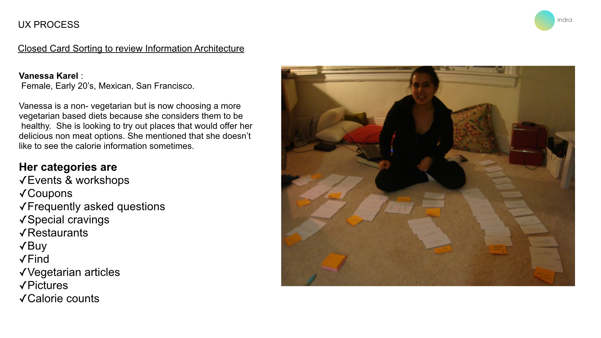
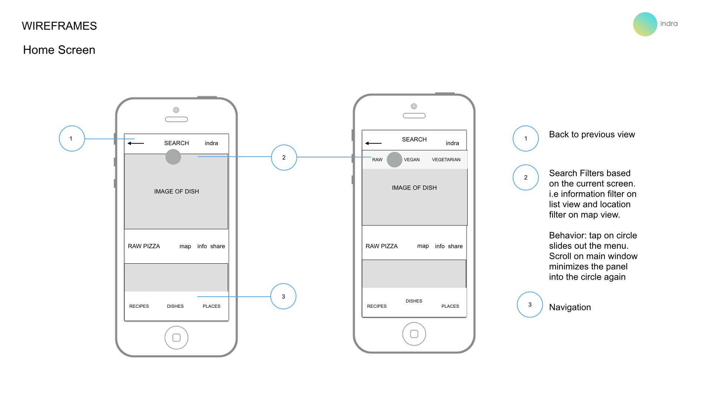

Indra
Indra is a mobile application for conscious foodies. Users can explore and learn about Raw, Vegan and Vegetarian diets.
Over the course of seven weeks, I explored the process of research, design, prototype and usability testing. The goal of the design was to offer a resource of information for users that were living this lifestyle as well as the ones that wanted to learn more.
A gradient filter allows for the user to select a range.This solution was applied to compliment the overlap within the categories

An open card sort was conducted to understand user's mental model.
 